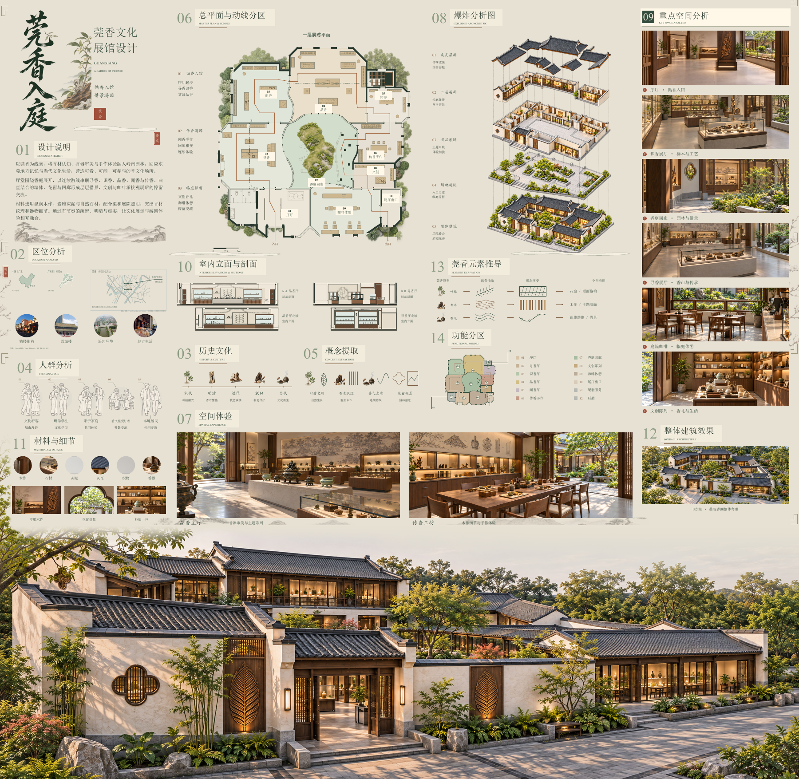

莞香入庭 · 毕设展板审核
毕设展板审核 · r94
莞香入庭，
疏密成景。
删除题名与06之间的竖向梅枝；底部外观左侧树枝延伸到11材料与细节标题附近，下实上虚、逐渐融入米色底。材料图文、14个板块及所有建筑图像位置保持上一版。
宽158 × 高154厘米 · RGB sRGB
有效300ppi · 字体嵌入 · 无出血
RGB sRGB，页面即成品尺寸，无额外出血。300ppi为输出密度；原图包含AI生成及增强素材。
当前展板与项目成果
点击查看完整原图。